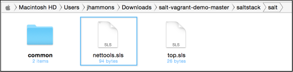
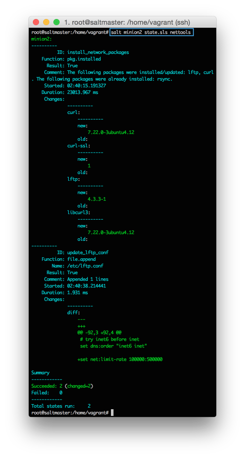

- Demo Environment
- Install SaltStack
- Execute Commands
- Target Systems
- Define Configurations
- Group Configurations
- The 'High State'
- Next Steps
Create A State File
You'll learn how to:
- Define a repeatable, customized definition of an application configuration.
- Insert system specific variables to simplify re-use.
- Insert simple conditions using requisites.
Estimated time: 15 minutes
Difficulty:
Remote execution is a big time saver, but it has some shortcomings. Most tasks you perform are a combination of many commands, tests, and operations, each with their own nuances and points-of-failure. Often an attempt is made to combine all of these steps in a master shell script, but these quickly get unwieldy and introduce their own headaches.
To solve this, SaltStack configuration management lets you create a re-usable configuration template, called a State, that describes everything required to put an application into a known configuration. States leverage the power of the execution modules we learned about in the previous section, and multiple execution modules can be used in a single state.
States are much easier to understand when you see them in action, so let's make one. States are described using YAML, and are simple to create and read.
To simplify this demo, our vagrant file maps the /srv/salt folder on your Salt Master to the local salt-vagrant-demo-master/saltstack folder. This means that you can use a local text editor and the local file system to test. To create our first state, create a new text file and add the following:
install_network_packages:
pkg.installed:
- pkgs:
- rsync
- lftp
- curl
Save this file as salt-vagrant-demo-master/saltstack/salt/nettools.sls:
Managing Files
Getting packages installed usually isn't as complicated as getting those packages in a functional state. SaltStack provides a wide range of tools to manage configuration files and copy entire directories of supplemental files to managed systems.
For example, if we want to distribute a global configuration file for lftp that limits download rates, we can do this using file.managed.
install_network_packages:
pkg.installed:
- pkgs:
- rsync
- lftp
- curl
copy_lftp_conf:
file.managed:
- name: /etc/lftp.conf
- source: salt://lftp.conf.template
However, instead of redistributing the entire file to change one line, let's use the file.append state module to simply insert the new line we want to add:
install_network_packages:
pkg.installed:
- pkgs:
- rsync
- lftp
- curl
update_lftp_conf:
file.append:
- name: /etc/lftp.conf
- text: set net:limit-rate 100000:500000
Lets go ahead and test this State file. We'll learn about a more powerful method to apply states in the next section, but for now you can use the state.sls command to apply a state directly from the command line.
Back on your Salt Master, run the following command to apply the state we created:
salt minion2 state.sls nettools
As you might have guessed, you can use the targeting mechanism to apply this state to any set of minions. For now just pick one of your minions to get the state. If everything goes well, you'll get output similar to this (click to enlarge):
If that is not cool enough, apply the state again to the same minion, and look at the output:

Salt determines that the system is already in the correct state, so nothing is changed. Nice.
Restarting Services, Requisites, Variables and more
There is a lot more power to the state system than we'll be able to cover here. States can restart services if changes are made, copy entire directories, require other states run first, use variables, and much more.
For now a basic understanding of states is enough to get started. Remember the powerful method we mentioned earlier to apply states? Let's tackle that.